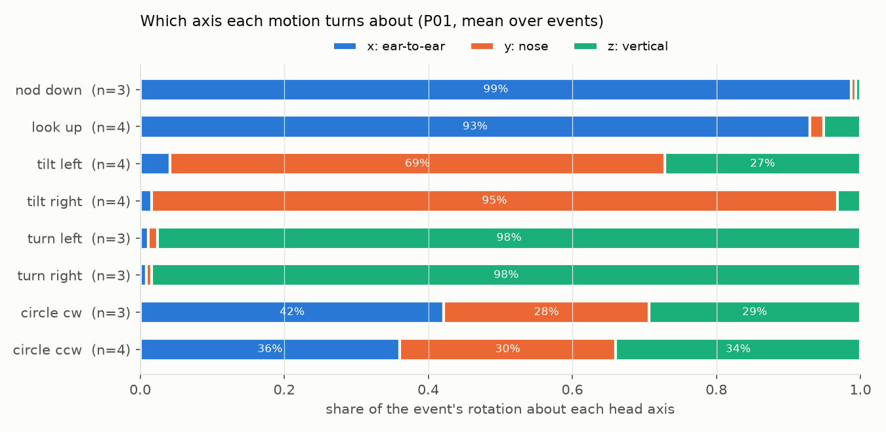
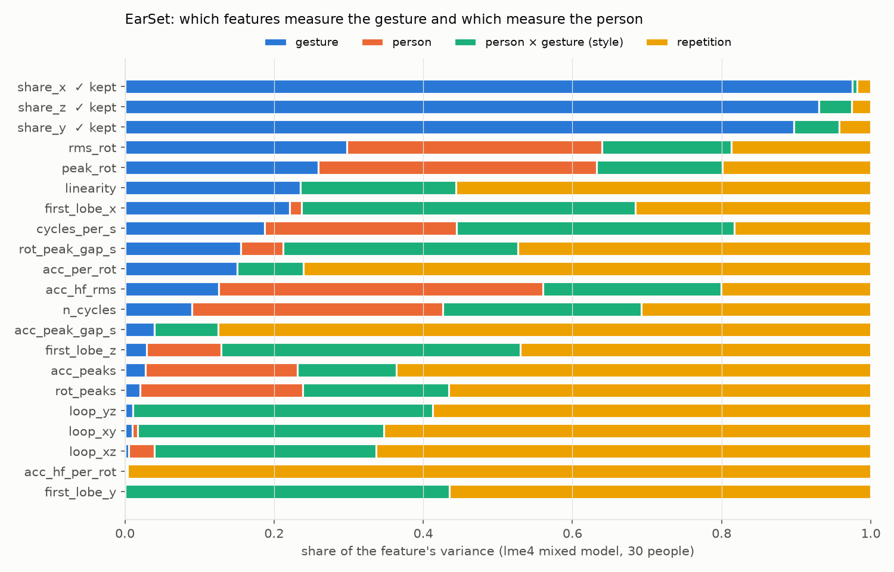
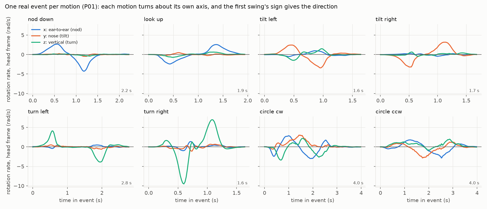

Turn each motion into a few numbers that mean the same for everyone
A motion is up to 200 samples of rotation and acceleration. We describe it with a handful of physical numbers instead, and we let statistics, not intuition, decide which numbers depend on the gesture rather than on the person.
Step 1: the head frame
The AirPods measure rotation in the earbud's own axes, and every earbud sits at a different angle in every ear. The same nod can look like a mix of all three axes for two different people. So before computing anything we rotate each motion into the head's axes:
z: up
Opposite to gravity, measured in the half second before the motion. This removes how the earbud is tilted in the ear and how the head is held.
x: the nod axis
From the 3 calibration nods: the horizontal axis the head turned about. The chin goes down first, so the first swing of a nod is positive about x, for everyone.
y: the nose axis
Completes the set (y = z × x). Tilts turn about y, turns about z, nods about x.
After this, "nod" means rotation about x for every person and every AirPods model. That is hypothesis H1, and it is what lets a model trained on other people work on you.
Step 2: the features
Four groups, each with a plain physical meaning (code: algorithm/gesturekit/features.py).
| Group | Features | What they measure | Says which gesture, or who? |
|---|---|---|---|
| Axis | share_x, share_y, share_z, linearity | what fraction of the rotation is nod, tilt or turn; whether it stays on one fixed axis | the gesture family |
| Signed | first_lobe_x/y/z, loop_xy/xz/yz | direction of the first swing on each axis; which way the path loops (clockwise or not) | the direction (left/right, up/down, cw/ccw) |
| Timing | rotation and acceleration peaks, gaps between them, high-frequency shake | rhythm and smoothness | mostly the person |
| Magnitude | peak and average speed, duration, number of back-and-forths | how big and fast | mostly the person (useful to tell a gesture from talking) |
All are computed on the whole detected event, whatever its length. The shares and linearity are ratios, so a slow and a fast nod give the same values. The loop features are too since 8 Nov: the independent check found the old formula shrank with event length and sample rate, so it is now the enclosed area divided by the circle at the peak radius (1.0 for a perfect circle, near 0 for a one-axis motion, at any length or rate).

results/p01_airpods_report.md.Step 3: which features to trust, decided in R
The earlier version of this project used 96 hand-picked statistics and a random forest. It scored 0.91 on people it had seen and 0.61 on a new person: many features described the person, not the gesture. We test that directly.
The idea: split each feature's variation into its causes
For every feature, a linear mixed model (R, lme4) splits its total variance into four parts:
Gesture
differences between nod, turn and tilt. We want this large.
Person
some people always give higher values, whatever the gesture.
Style
person × gesture: this person nods in their own way.
Repetition
trial-to-trial noise of the same person and gesture.
feature ~ gesture + (1 | person) + (1 | person:gesture), each feature standardised, with 95 %
bootstrap confidence intervals (algorithm/r/variance_components.R).
The keep rule (written down before our own data)
- gesture share ≥ 0.30, and
- gesture share ≥ 2 × (person + style), and
- the lower confidence limit of the gesture share is above the upper limit of person + style.
It is applied to all motions together and to each confusable pair (tilt L vs R, turn L vs R, circle cw
vs ccw), because a direction feature separates one pair and is invisible over the whole vocabulary. Inside every
cross-validation fold it is refit on the training people only, so the test person never influences the choice.
Rule text: algorithm/r/SCREENING_RULE.md (version 2, written after seeing EarSet; fixed before any
pilot data).
Result on EarSet (30 people, nod / shake / tilt)
| Feature | Gesture | Person | Style | Repetition | Keep |
|---|---|---|---|---|---|
| share_x | 0.98 | 0.00 | 0.01 | 0.02 | yes |
| share_z | 0.93 | 0.00 | 0.04 | 0.03 | yes |
| share_y | 0.90 | 0.00 | 0.06 | 0.04 | yes |
| linearity | 0.24 | 0.00 | 0.21 | 0.56 | no |
| rms_rot (speed) | 0.30 | 0.34 | 0.17 | 0.19 | no |
| peak_rot (speed) | 0.26 | 0.37 | 0.17 | 0.20 | no |
| acc_hf_rms (shake) | 0.13 | 0.44 | 0.24 | 0.20 | no |
| first_lobe_x/y/z, loops | 0.00-0.22 | 0.00-0.10 | 0.30-0.45 | 0.32-0.66 | cannot judge here |
Full table: results/variance_components.md (2035 gesture events; 100 bootstrap draws, at least 500
for the paper).

What this means
- Axis shares are the gesture. 0.90-0.98 of their variation is the gesture, at most 0.06 is the person. Partly by construction (nod, shake and tilt each turn about a different axis), which is exactly why the head frame matters.
- Speed, size and rhythm are the person. They are not used to say which gesture. They can still help tell a gesture from talking or chewing, which is judged separately, by leave-one-person-out tests.
- Direction features cannot be judged on EarSet, because EarSet does not record left vs right. Their
"gesture" share is near zero only because both directions are pooled. Supporting evidence: on the old
4-person AirPods data they separate tilt left/right (0.52 → 0.94) and circle cw/ccw (0.54 → 0.97), and on P01
one sign separated every direction pair (3-4 trials per motion). But when the full chain names single events on
that old 4-person data, it gets only 3-29 % right (
results/pair_reliability.md), so the 4-person figure is weaker evidence than it looks. The formal per-pair check runs on pilot data.
The features the live recogniser uses, and how well each is justified
| Feature in the app | Used for | Justified by | Status |
|---|---|---|---|
| share_x, share_y, share_z | family (nod / tilt / turn) | R keep rule on EarSet; 21/21 from EarSet to P01 | supported |
| sign of the first swing | direction | physics of the head frame; P01: every pair separated; old 4-person data | R check pending (pilot) |
| |loop| per plane | circle vs one-axis motion | circles draw a loop, one-axis motions do not; EarSet has no circles. Formula fixed 8 Nov | untested by R |
| linearity | model input | failed the R rule (gesture 0.24) | revisit |
Why not a bigger model?
The earlier team tried them on the same kind of data: MiniRocket (a fast deep time-series method) reached 0.72 on a new person, a reservoir network 0.66 with 200-300 false alarms per hour. Those stay as baselines to beat on the same test splits. Our bet (H5) is that a few physics features in a head frame transfer to new people and new devices better, and they are explainable.
